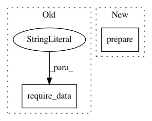

38d994a74f40e481f10a7dd90fbddeb0196f0b4a,src/python/pants/backend/jvm/tasks/junit_run.py,JUnitRun,prepare,#JUnitRun#Any#,491
Before Change
self._runner = _JUnitRunner(task_exports, self._context)
def prepare(self, round_manager):
round_manager.require_data("resources_by_target")
// List of FQCN, FQCN//method, sourcefile or sourcefile//method.
round_manager.require_data("classes_by_target")
round_manager.require_data("classes_by_source")
After Change
self._runner = _JUnitRunner(task_exports, self._context)
def prepare(self, round_manager):
super(JUnitRun, self).prepare(round_manager)
// List of FQCN, FQCN//method, sourcefile or sourcefile//method.
round_manager.require_data("classes_by_target")
round_manager.require_data("classes_by_source")
In pattern: SUPERPATTERN
Frequency: 3
Non-data size: 2
Instances
Project Name: pantsbuild/pants
Commit Name: 38d994a74f40e481f10a7dd90fbddeb0196f0b4a
Time: 2014-07-02
Author: john.sirois@gmail.com
File Name: src/python/pants/backend/jvm/tasks/junit_run.py
Class Name: JUnitRun
Method Name: prepare
Project Name: pantsbuild/pants
Commit Name: 38d994a74f40e481f10a7dd90fbddeb0196f0b4a
Time: 2014-07-02
Author: john.sirois@gmail.com
File Name: src/python/pants/backend/jvm/tasks/specs_run.py
Class Name: SpecsRun
Method Name: prepare
Project Name: pantsbuild/pants
Commit Name: dcb2de22f72596ab848c458d4adafb7471e4a3a5
Time: 2015-04-10
Author: john.sirois@gmail.com
File Name: src/python/pants/backend/jvm/tasks/jar_task.py
Class Name: JarTask
Method Name: prepare